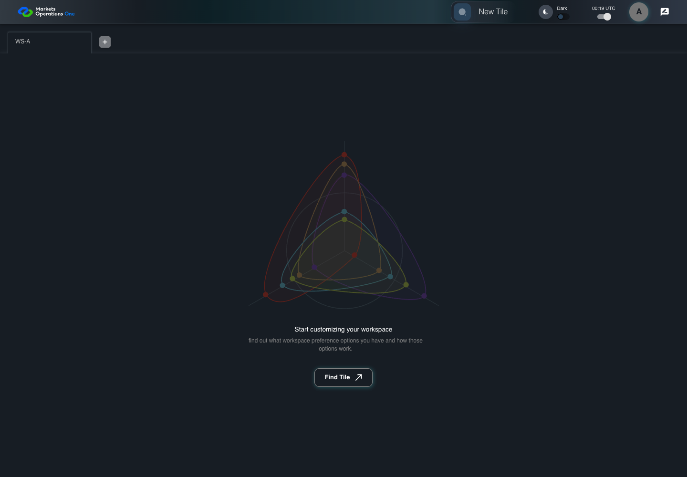

AUTH-068 access rotation replaces obsolete timer
PASS · application/run-050/auth-068-access-rotation-replaces-obsolete-timer-949bc62c64a5-attempt-1 · ACTUAL_APPLICATION_LOCAL_SERVICES
Actual MFE; controlled API responses, clock, visibility and suspension adapters. Unsigned browser-only credentials. No natural lifecycle, real identity or service policy acceptance.
2026-10-22T06:05:19.368Z to 2026-10-22T06:05:22.481Z
Assertions and result · Artifact manifest · Exact run inputs and source hashes
Result SHA-256:f1b4e85074d0769269f275f7c8ae6f88ef7372f98813bf7bb43ac57800904b34Machine observations
- session-fixture.json
f7303da584e2110703c366c5519ebe8e699f0d67ab5fe68098532c83b5597146 - session-observations.json
e124de6322c7c5acefa4b2211679eccdf084d9fe1cc67ec2a8f4622ebcdc7f3a
Screenshot capture: CAPTURED. Named frames: 13.
Step screenshot evidence: COMPLETE. 12/12 canonical steps have execution screenshots.
Canonical step timeline
Given User A is authenticated as user-a in an isolated browser context
Execution: PASSED.
1. step-01 Visible state after step 1: Given User A is authenticated as user-a in an isolated browser context
2026-10-22T06:05:21.112Z · 1440×1000
Step: /Users/lushevol/code/github/ratan-release-impact/workbench/tasks/ui-test-coverage-20261022/test-cases.md:2582
SHA-256:173819b107f9721ddd580be6e85c728fb50ae34f4f23504c76db9e83104ff541And the selected fixture tab is labelled "WS-A" inside the tablist named "workspaces" on the Home page
Execution: PASSED.
2. step-02 Visible state after step 2: And the selected fixture tab is labelled "WS-A" inside the tablist named "workspaces" on the Home page
2026-10-22T06:05:21.222Z · 1440×1000
Step: /Users/lushevol/code/github/ratan-release-impact/workbench/tasks/ui-test-coverage-20261022/test-cases.md:2583
SHA-256:173819b107f9721ddd580be6e85c728fb50ae34f4f23504c76db9e83104ff541And access A expires at controlled time T+900 seconds; no refresh credential exists
Execution: PASSED.
3. step-03 Visible state after step 3: And access A expires at controlled time T+900 seconds; no refresh credential exists
2026-10-22T06:05:21.309Z · 1440×1000
Step: /Users/lushevol/code/github/ratan-release-impact/workbench/tasks/ui-test-coverage-20261022/test-cases.md:2584
SHA-256:173819b107f9721ddd580be6e85c728fb50ae34f4f23504c76db9e83104ff541And access A rotates to access B expiring at T+1200 seconds before T+875 seconds
Execution: PASSED.
4. step-04 Visible state after step 4: And access A rotates to access B expiring at T+1200 seconds before T+875 seconds
2026-10-22T06:05:21.411Z · 1440×1000
Step: /Users/lushevol/code/github/ratan-release-impact/workbench/tasks/ui-test-coverage-20261022/test-cases.md:2585
SHA-256:173819b107f9721ddd580be6e85c728fb50ae34f4f23504c76db9e83104ff541And no mouse or visibility activity occurs
Execution: PASSED.
5. step-05 Visible state after step 5: And no mouse or visibility activity occurs
2026-10-22T06:05:21.467Z · 1440×1000
Step: /Users/lushevol/code/github/ratan-release-impact/workbench/tasks/ui-test-coverage-20261022/test-cases.md:2586
SHA-256:173819b107f9721ddd580be6e85c728fb50ae34f4f23504c76db9e83104ff541When the controlled browser clock reaches T+875 seconds
Execution: PASSED.
6. step-06 Visible state after step 6: When the controlled browser clock reaches T+875 seconds
2026-10-22T06:05:21.686Z · 1440×1000
Step: /Users/lushevol/code/github/ratan-release-impact/workbench/tasks/ui-test-coverage-20261022/test-cases.md:2587
SHA-256:f43ad2ced045d3a88e2e366d2f5ee314e875fbef24472df1b59079da4e1301d6Then the browser records exactly 0 new POST requests to "/api/auth/v2/sso/refreshtoken"
Execution: PASSED.
7. step-07 Visible state after step 7: Then the browser records exactly 0 new POST requests to "/api/auth/v2/sso/refreshtoken"
2026-10-22T06:05:21.753Z · 1440×1000
Step: /Users/lushevol/code/github/ratan-release-impact/workbench/tasks/ui-test-coverage-20261022/test-cases.md:2588
SHA-256:f43ad2ced045d3a88e2e366d2f5ee314e875fbef24472df1b59079da4e1301d6And the tab labelled "WS-A" inside the tablist named "workspaces" on the Home page is visible
Execution: PASSED.
8. step-08 Visible state after step 8: And the tab labelled "WS-A" inside the tablist named "workspaces" on the Home page is visible
2026-10-22T06:05:21.834Z · 1440×1000
Step: /Users/lushevol/code/github/ratan-release-impact/workbench/tasks/ui-test-coverage-20261022/test-cases.md:2589
SHA-256:f43ad2ced045d3a88e2e366d2f5ee314e875fbef24472df1b59079da4e1301d6And the dialog named "Your session has been expired" on the Home page is absent
Execution: PASSED.
9. step-09 Visible state after step 9: And the dialog named "Your session has been expired" on the Home page is absent
2026-10-22T06:05:21.917Z · 1440×1000
Step: /Users/lushevol/code/github/ratan-release-impact/workbench/tasks/ui-test-coverage-20261022/test-cases.md:2590
SHA-256:f43ad2ced045d3a88e2e366d2f5ee314e875fbef24472df1b59079da4e1301d6When the controlled browser clock reaches T+1175 seconds
Execution: PASSED.
10. step-10 Visible state after step 10: When the controlled browser clock reaches T+1175 seconds
2026-10-22T06:05:22.017Z · 1440×1000
Step: /Users/lushevol/code/github/ratan-release-impact/workbench/tasks/ui-test-coverage-20261022/test-cases.md:2591
SHA-256:076b4623bfd04b73774941adf3bbcc15d2aca61ec49f3bf73fd04092e836eec8Then the browser records exactly 1 new POST requests to "/api/auth/v2/sso/refreshtoken"
Execution: PASSED.
11. step-11 Visible state after step 11: Then the browser records exactly 1 new POST requests to "/api/auth/v2/sso/refreshtoken"
2026-10-22T06:05:22.088Z · 1440×1000
Step: /Users/lushevol/code/github/ratan-release-impact/workbench/tasks/ui-test-coverage-20261022/test-cases.md:2592
SHA-256:076b4623bfd04b73774941adf3bbcc15d2aca61ec49f3bf73fd04092e836eec8And the acquisition POST body has singleUIAuthorization equal to access B
Execution: PASSED.
12. step-12 Visible state after step 12: And the acquisition POST body has singleUIAuthorization equal to access B
2026-10-22T06:05:22.155Z · 1440×1000
Step: /Users/lushevol/code/github/ratan-release-impact/workbench/tasks/ui-test-coverage-20261022/test-cases.md:2593
SHA-256:076b4623bfd04b73774941adf3bbcc15d2aca61ec49f3bf73fd04092e836eec8
Additional named frames

The final visible state after the named test assertions.
2026-10-22T06:05:22.302Z · 1440×1000Step: Test source: /Users/lushevol/code/github/ratan-release-impact/workbench/e2e/audit-specs/auth-session-expanded.spec.ts:109
SHA-256:
076b4623bfd04b73774941adf3bbcc15d2aca61ec49f3bf73fd04092e836eec8Screenshots establish visible state only. Assertions and traces support functional claims.